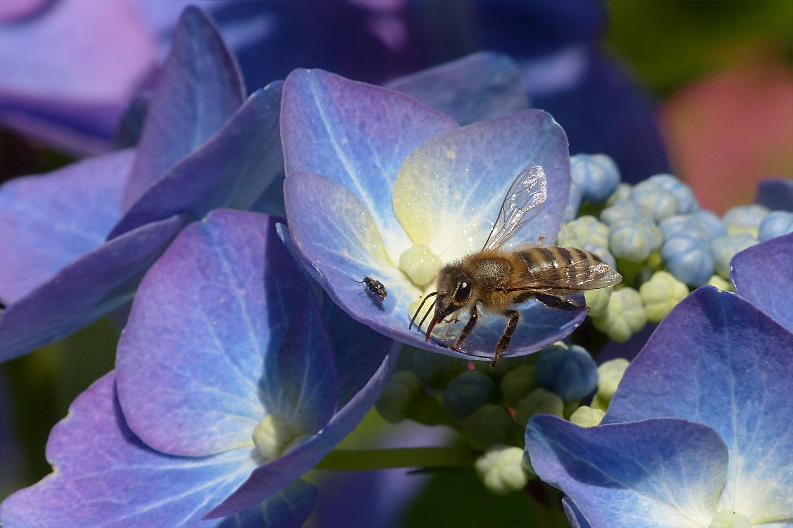
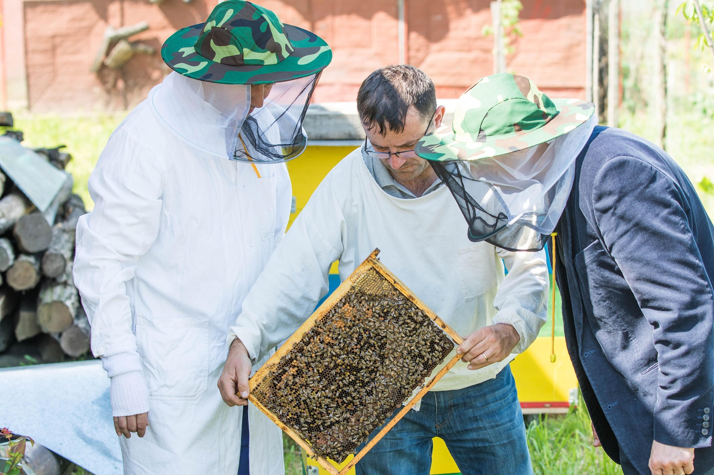
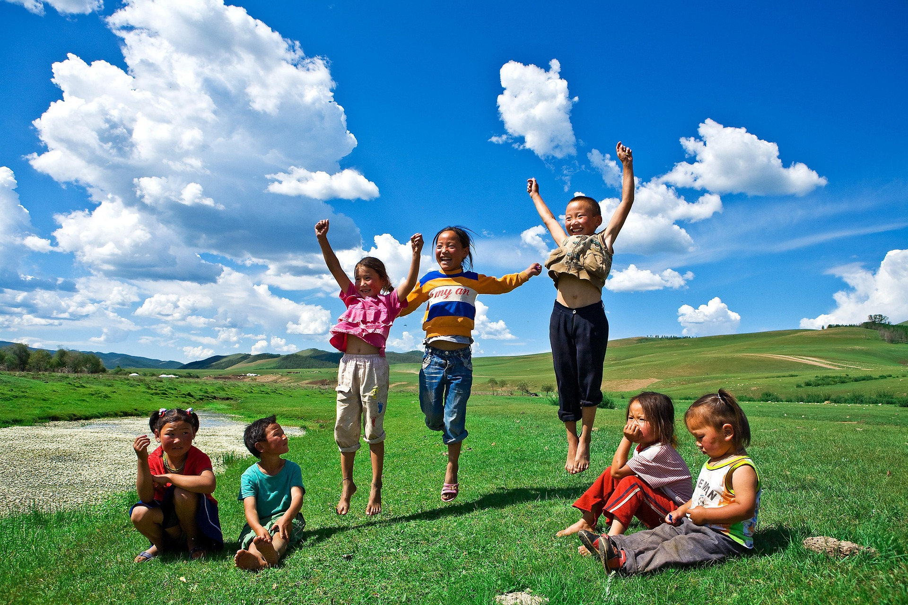
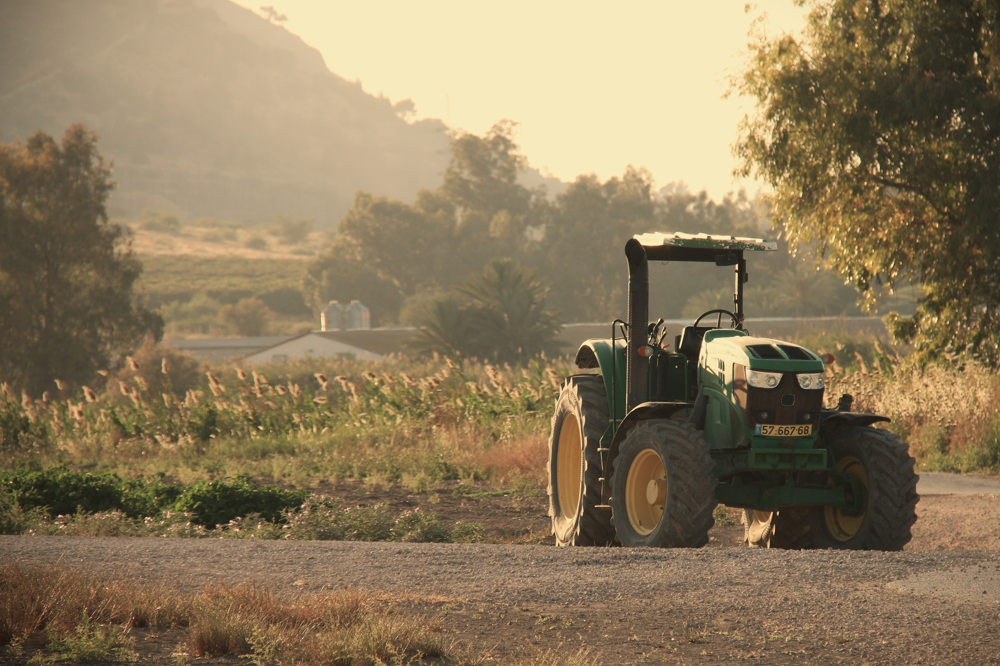

Recovery Programs & Servives
The organization at its core is an alternative to traditional rehabilitation centres for drug abuse.The organization offers a Recovery Program, Heal the Parent Heal the Child Program and Bee Farm Touring services.
01
Recovery Journey Program
Blue Bees Recovery program is a 6-month,
onsite full time program for people who are looking for a
safe and drug-free environment to live in while they recover
and regain their lives.
The program focuses on personal accountability and peer support
help each other to build toward a healthier, more stable life.
Representatives(Reps) work with residents to ensure that
they are engaged and supported with all necessary activities
needed to successfully transition back into society
including connection to physical and mental health care.
Blue Bees Recovery is a free life renewal recovery program located in Durban North.
The Recovery Program is priced at R35,000, which covers the following inclusions:
- Safe and sober environment
- Single room
- Community library and living rooms
- All meals
- All personal care items and laundry
- Clothing and shoes
- Medical treatment


02
Heal the parent to heal the child(HPHC) Program
This program places the healing journey of children—whose parents are in recovery—at its heart. Most parents are actively enrolled in the Recovery Program, while their children participate in a full-time, onsite initiative designed to provide stability and support. There are also meaningful crossovers between the Recovery Program and the HPHC, creating a holistic environment that nurtures both parent and child. The HPHC Program is covered by our sponsors.
03
Bee Farm Touring Services
Blue Bees invites visitors to experience the bee farm through enriching day tours, where guests engage directly with dedicated beekeepers, discover the fascinating world of bees, and gain a deeper understanding of our mission. These visits are further illuminated by the inspiring testimonies of individuals who have journeyed through recovery, offering living proof of hope and renewal. The Touring Services is priced at R500 per person for a day visitation, which covers beekeeping uniform and honey bar that you will collect.
